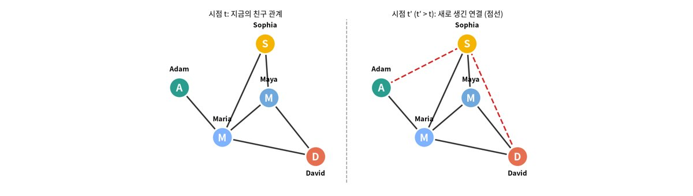
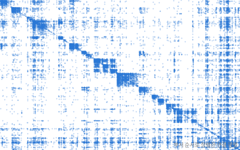

사진: Martin Grandjean · CC BY-SA 4.0SNAP, Stanford (Leskovec, Kleinberg & Faloutsos, 2007; Yin et al., 2017). 유럽 한 연구기관 구성원 1,005명 사이의 이메일 연결 25,571개 + 소속 부서 42개

| 사람 a | 사람 b | a 의 부서 | b 의 부서 |
|---|---|---|---|
| 0 | 1 | 1 | 1 |
| 0 | 5 | 1 | 25 |
| 0 | 6 | 1 | 25 |
| 0 | 17 | 1 | 1 |
| 0 | 18 | 1 | 1 |
| 열 | 종류 | 빈칸 | 고유값 수 | 범위 · 대표값 |
|---|---|---|---|---|
| a | 숫자 | 0 | 868 | 0 ~ 1003 (평균 304.4) |
| b | 숫자 | 0 | 991 | 0 ~ 1004 (평균 317.2) |
| dept_a | 숫자 | 0 | 40 | 0 ~ 41 (평균 16.75) |
| dept_b | 숫자 | 0 | 42 | 0 ~ 41 (평균 15.83) |
몇 명에게 연결이 몰려 있다
연결의 34% 가 같은 부서 안. 부서가 42개라 무작위라면 훨씬 낮을 것
| ① 한 행 | 두 사람의 쌍 |
| ② 입력 X | 지금까지의 연결망 (공통 지인 수, 같은 부서인가 …) |
| ③ 출력 y | 둘이 연결되는가 |
| ④ 평가지표 | ROC-AUC (진짜 연결을 더 높게 매겼나) |
| ⑤ 기준선 | 무작위 점수 (AUC 0.5) |
문제를 정할 때 처음 채워 보는 칸들입니다. 여기서 끝이 아니라, 시험 데이터를 어떻게 나눌지 · 틀렸을 때 손해가 얼마인지 · 예측 시점에 정말 알 수 있는 값인지 같은 칸을 더 붙일수록 좋은 문제가 됩니다.
random score : AUC 0.49 same department : AUC 0.65 number of common friends: AUC 0.94
누가, 왜, 어떻게 만든 데이터인지 직접 확인해 보세요.
인턴 · 산학협력 · 프로젝트 주제를 고를 때 참고하세요 (일반적인 예시).